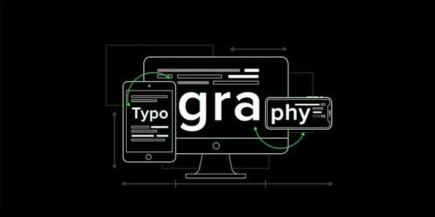
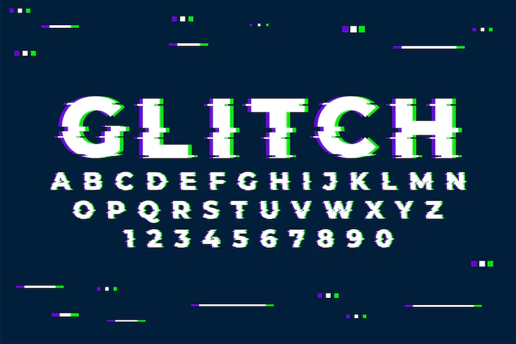

Digital TypographyYour choice of font can easily change a conversation.
Learn more
What Is Typography?
Typography is the style of appearance of text. It is also the art of working with text.
Learn MoreTypes of Typography
Typographic Hierarchy
Typographic hierarchy is a system for organizing type that establishes an order of importance. It allows the reader to find what they need and navigate through content, which makes it an important technique for communicating effectively.
Typographical ConceptsLEADING - TRACKING - KERNING
line two
Leading
Leading is the space between lines of text, more commonly known as line spacing. It affects legibility.
Tracking
Tracking is the uniform space between characters.
Kerning
Kerning is the space between characters in a proportional font. Unlike tracking, the spacing is not uniform. Poor kerning leaves letters looking improperly spaced and can change how a word is read.

Typeface vs Font
The two terms are commonly used as if they meant the same thing. Their roots point the same way: "typus" (Latin for impression or to strike), "facies" (Latin for form or appearance), and "fonte" (French for casting or founding).
- Typeface: a particular design of type, the face of a printing type, and the collective name for a family of related fonts.
- Font: a set of type of one particular face and size. In practice, the weights, widths, and styles that constitute a typeface.
- History: in early typesetting, type foundries cast characters in lead alloys, and these were called fonts. The term was first used in 1688 and historically meant a given alphabet and its characters in a single size. Digital, scalable fonts and inaccurate naming in operating systems later blurred the two terms.
Try It Yourself
Target
Your attempt
Technical Media Spec
| Asset Name & File Format | Original Size → Compressed | Color Depth / Quantization | Compression Algorithm |
|---|---|---|---|
| typography.png | 585 KB to 55 KB | 24-bit (8 bits per channel) | Lossless (DEFLATE: LZ77 + Huffman) |
| glitch.png | 1.04 MB to 147 KB | 24-bit (8 bits per channel) | Lossless (DEFLATE: LZ77 + Huffman) |
| 1-04. Want To Be Close -Reload-.mp3 | 21.3 MB to 4.1 MB | 16-bit, 44.1 kHz, stereo | Lossy, variable bitrate (MDCT + Huffman) |
Original size is the uncompressed size worked out from the pixel dimensions (width × height × 3 bytes) or the audio length (16-bit, 44.1 kHz, stereo).